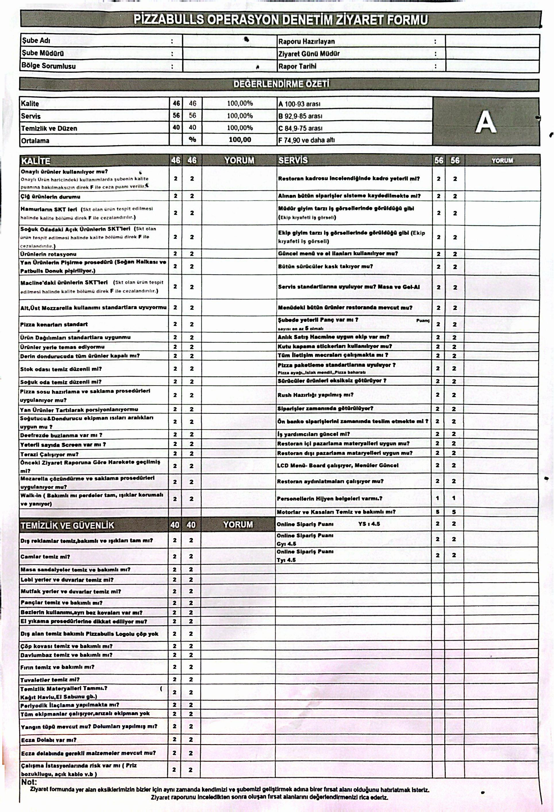

Şube kodu ekleyin
Bu bilgisayarda ilk açılış. Merkezden verilen şube anahtarını yazın; raporlar doğrudan buluta gider.
İşlemek istediğiniz belge tipini seçin.
Gün sonu tablosunu Excel’den kopyalayıp Ctrl+V ile yapıştırın. İlk boş sütun kaldırılır, tamamen boş satırlar silinir; üstte sabit başlıklar eklenir (Açıklama, Adet, Tutar, OSF).
Yapıştır
Rapor tarihi (dosya adı)
Önizleme
Excel’den stok tablosunu kopyalayıp yapıştırın. İlk boş sütun kaldırılır; üstte sabit sütun başlıkları eklenir. Gönder raporu buluta iletir.
Yapıştır / Sürükle
Kayıt ayı
Önizleme
Aşağıdaki tüm maddeleri kağıt formdaki gibi doldurun. Alınan puanlar otomatik toplanır; genel yüzde ve skala notu hesaplanır. Skala: A %93–100, B %85–92.9, C %75–84.9, F %74.9 ve altı.
Referans (orijinal form görseli)

Görsel yoksa bu kutuyu yok sayın; tüm sorular listede yer alır.
Üst bilgiler
Özet sonuç
Excel’den tabloyu kopyalayıp buraya yapıştırın (Ctrl+V) veya dosyayı sürükleyip bırakın. Şube / Worker ayarı: Uygulama ayarları (üst çubuk).
Şube anahtarı ilk açılışta veya ayarlarda kayıtlı olmalı; ardından Gönder buluta yollar.